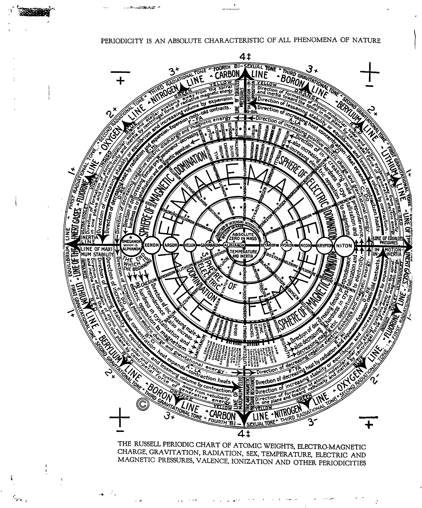
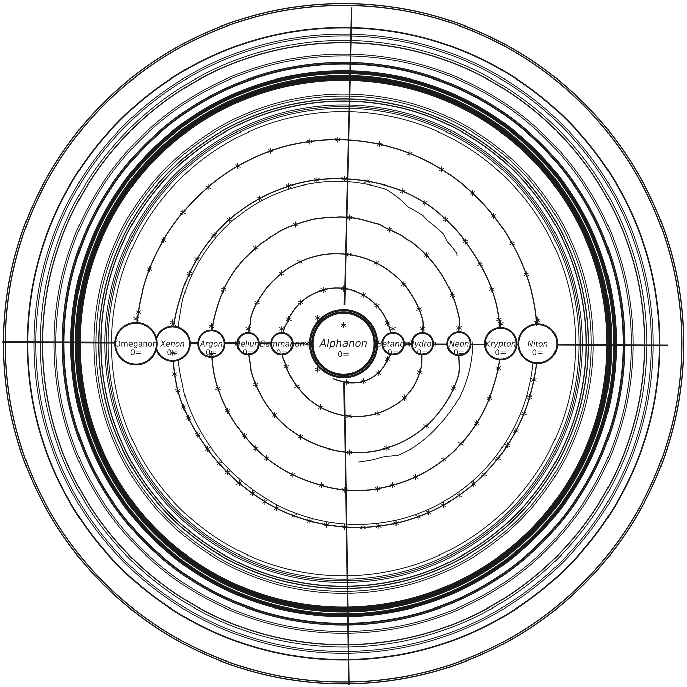

The chart
The Russell Periodic Chart of Atomic Weights
The 1926 plate, restored, beside a redraw measured from it. One viewer, two fidelities.
{kind=link}
{kind=link}
Every label on this chart is transcribed in the dataset table. The table is the citable record; the images are the witness.


Keyboard: Tab to the image, then + and − zoom, arrow keys pan, 0 resets. Mouse: scroll zooms, drag pans, double-click zooms in.
Facsimile. The 1926 plate, cleaned. Source: Library of Congress, item 27004508, image 0016. Credit Line: Library of Congress. The image above is the full-resolution file (2712×3264). Redraw. Generated from the measured plate geometry and the transcribed table. License: CC BY-NC 4.0.
How the facsimile was made
Restoration is deterministic. Every output pixel is a function of the Library of Congress scan. The full pipeline is on the methods page. The steps, in order:
- Estimate the page background by grayscale closing, window 101 px.
- Divide the scan by the background to flatten illumination.
- Binarize with one global Otsu threshold (value 166 on this scan).
- Remove ink specks of 8 px or less.
- Drop components that touch the image border (the scanner frame).
Not done: no inpainting, no learned enhancement, no manual retouching. The unmodified scan remains available from the Library of Congress at full resolution.
How the redraw was made
The redraw places 117 element labels at positions measured on the scan. Twenty more placements are computed from the measured ring geometry. The renderer reads the transcribed dataset and the measured geometry, and its output is byte-deterministic. Prose ring texts and marginal annotations of the plate are not element data and are not reproduced. The SVG labels use the Oswald typeface when installed and fall back to a system sans-serif.